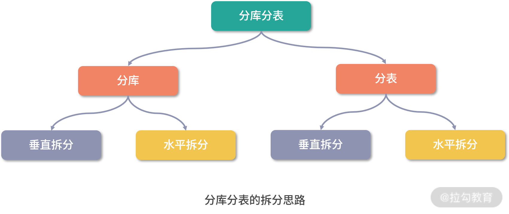
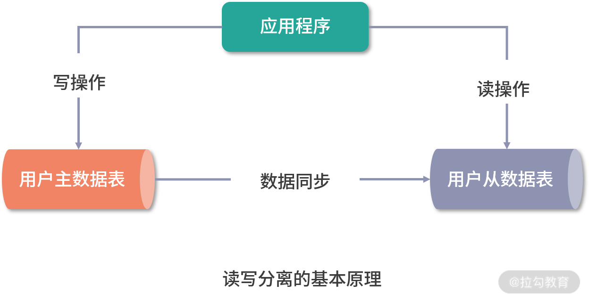
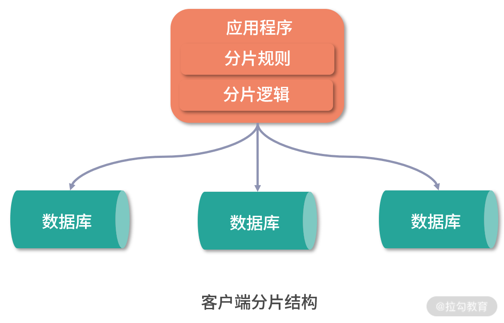
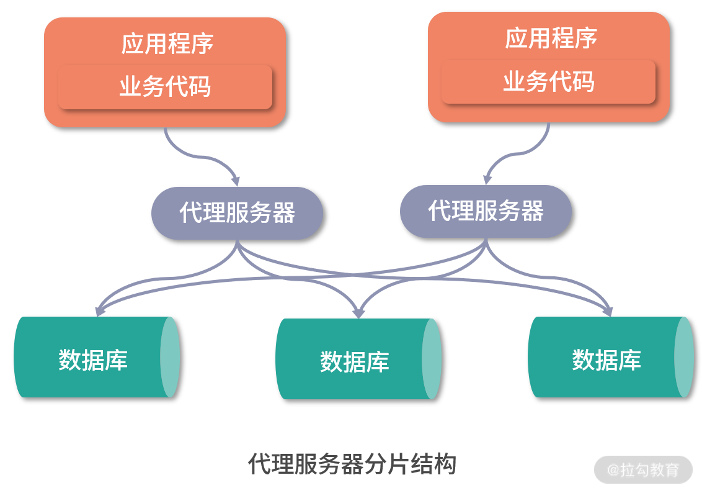

- 00 如何正确学习一款分库分表开源框架？.md.html
- 01 从理论到实践：如何让分库分表真正落地？.md.html
- 02 顶级项目：ShardingSphere 是一款什么样的 Apache 开源软件？.md.html
- 03 规范兼容：JDBC 规范与 ShardingSphere 是什么关系？.md.html
- 04 应用集成：在业务系统中使用 ShardingSphere 的方式有哪些？.md.html
- 05 配置驱动：ShardingSphere 中的配置体系是如何设计的？.md.html
- 06 数据分片：如何实现分库、分表、分库+分表以及强制路由？（上）.md.html
- 07 数据分片：如何实现分库、分表、分库+分表以及强制路由？（下）.md.html
- 08 读写分离：如何集成分库分表+数据库主从架构？.md.html
- 09 分布式事务：如何使用强一致性事务与柔性事务？.md.html
- 10 数据脱敏：如何确保敏感数据的安全访问？.md.html
- 11 编排治理：如何实现分布式环境下的动态配置管理？.md.html
- 12 从应用到原理：如何高效阅读 ShardingSphere 源码？.md.html
- 13 微内核架构：ShardingSphere 如何实现系统的扩展性？.md.html
- 14 分布式主键：ShardingSphere 中有哪些分布式主键实现方式？.md.html
- 15 解析引擎：SQL 解析流程应该包括哪些核心阶段？（上）.md.html
- 16 解析引擎：SQL 解析流程应该包括哪些核心阶段？（下）.md.html
- 17 路由引擎：如何理解分片路由核心类 ShardingRouter 的运作机制？.md.html
- 18 路由引擎：如何实现数据访问的分片路由和广播路由？.md.html
- 19 路由引擎：如何在路由过程中集成多种路由策略和路由算法？.md.html
- 20 改写引擎：如何理解装饰器模式下的 SQL 改写实现机制？.md.html
- 21 执行引擎：分片环境下 SQL 执行的整体流程应该如何进行抽象？.md.html
- 22 执行引擎：如何把握 ShardingSphere 中的 Executor 执行模型？（上）.md.html
- 23 执行引擎：如何把握 ShardingSphere 中的 Executor 执行模型？（下）.md.html
- 24 归并引擎：如何理解数据归并的类型以及简单归并策略的实现过程？.md.html
- 25 归并引擎：如何理解流式归并和内存归并在复杂归并场景下的应用方式？.md.html
- 26 读写分离：普通主从架构和分片主从架构分别是如何实现的？.md.html
- 27 分布式事务：如何理解 ShardingSphere 中对分布式事务的抽象过程？.md.html
- 28 分布式事务：ShardingSphere 中如何集成强一致性事务和柔性事务支持？（上）.md.html
- 29 分布式事务：ShardingSphere 中如何集成强一致性事务和柔性事务支持？（下）.md.html
- 30 数据脱敏：如何基于改写引擎实现低侵入性数据脱敏方案？.md.html
- 31 配置中心：如何基于配置中心实现配置信息的动态化管理？.md.html
- 32 注册中心：如何基于注册中心实现数据库访问熔断机制？.md.html
- 33 链路跟踪：如何基于 Hook 机制以及 OpenTracing 协议实现数据访问链路跟踪？.md.html
- 34 系统集成：如何完成 ShardingSphere 内核与 Spring+SpringBoot 的无缝整合？.md.html
- 35 结语：ShardingSphere 总结及展望.md.html
- 捐赠
01 从理论到实践：如何让分库分表真正落地？
本课时主要讲解如何让分库分表真正落地。
在互联网系统开发过程中，分库分表并不是一个新概念，很多开发人员对分库分表或多或少都有所了解，也知道其使用场景。但是对究竟如何实现分库分表并不是很明确。当然，分库分表的含义与实现远比字面意思要复杂得多，这就引出了今天我要阐述的核心话题：如何让分库分表真正落地。
从数据存储和访问的演进过程说起
要想回答“如何让分库分表真正落地？”这个问题，我先从一个典型案例说起：试想在一个电商系统中存在订单表，系统在初始运行期间，一般使用单库和单表的方式来存储和访问数据。因为数据量不大，所以数据库访问的瓶颈并不明显。
随着业务的演进，当需要支撑大规模电商业务时，系统每天可能会生成数十万甚至上百万级别的订单数据，订单表的访问就会开始出现瓶颈。
以互联网系统中常用的 MySQL 数据库为例，虽然单表存储的数据原则上可以达到亿条级别，但此时访问性能会变得很差，即使采用各种调优策略，效果也通常微乎其微。业界普遍认为，MySQL 单表容量在 1 千万以下是一种最佳状态，一旦超过这个量级，就需要考虑采用其他方案了。
既然以 MySQL 为代表的关系型数据库中的单表无法支持大数据量的存储和访问方案，自然而然的，你可能会想到是否可以采用诸如 MongoDB 等 NoSQL 的方式来管理数据？
但这并不是一个很好的选项，原因有很多：一方面，关系型生态系统非常完善，关系型数据库经过几十年的持续发展，具有 NoSQL 无法比拟的稳定性和可靠性；另一方面，关系型数据库的事务特性，也是其他数据存储工具所不具备的一项核心功能。目前绝大部分公司的核心数据都存储在关系型数据库中，就互联网公司而言，MySQL 是主流的数据存储方案。
现在，我们选择了关系型数据库，就可以考虑采用分库分表的方案来解决单库表的瓶颈问题，这是目前互联网行业处理海量数据的通用方法。分库分表方案更多的是对关系型数据库数据存储和访问机制的一种补充，而不是颠覆。那么究竟什么是分库分表呢？
什么是数据分库分表？
分库和分表是两个概念，但通常会把它们合在一起简称为分库分表。所谓分库分表，业界并没有一个统一的定义，你可以简单理解为：
为了解决由于数据量过大而导致的数据库性能降低的问题，将原来独立的数据库拆分成若干数据库，把原来数据量大的表拆分成若干数据表，使得单一数据库、单一数据表的数据量变得足够小，从而达到提升数据库性能的效果。
分库分表的表现形式也有很多种，一起来看一下。
分库分表的表现形式
分库分表包括分库和分表两个维度，在开发过程中，对于每个维度都可以采用两种拆分思路，即垂直拆分和水平拆分：

先来讨论垂直拆分的应用方式，相比水平拆分，垂直拆分相对比较容易理解和实现。在电商系统中，用户在打开首页时，往往会加载一些用户性别、地理位置等基础数据。对于用户表而言，这些位于首页的基础数据访问频率显然要比用户头像等数据更高。基于这两种数据的不同访问特性，可以把用户单表进行拆分，将访问频次低的用户头像等信息单独存放在一张表中，把访问频次较高的用户信息单独放在另一张表中：
从这里可以看到，垂直分表的处理方式就是将一个表按照字段分成多张表，每个表存储其中一部分字段。 在实现上，我们通常会把头像等 blob 类型的大字段数据或热度较低的数据放在一张独立的表中，将经常需要组合查询的列放在一张表中，这也可以认为是分表操作的一种表现形式。
通过垂直分表能得到一定程度的性能提升，但数据毕竟仍然位于同一个数据库中，也就是把操作范围限制在一台服务器上，每个表还是会竞争同一台服务器中的 CPU、内存、网络 IO 等资源。基于这个考虑，在有了垂直分表之后，就可以进一步引入垂直分库。
对于前面介绍的场景，分表之后的用户信息同样还是跟其他的商品、订单信息存放在同一台服务器中。基于垂直分库思想，这时候就可以把用户相关的数据表单独拆分出来，放在一个独立的数据库中。

这样的效果就是垂直分库。从定义上讲，垂直分库是指按照业务将表进行分类，然后分布到不同的数据库上。然后，每个库可以位于不同的服务器上，其核心理念是专库专用。而从实现上讲，垂直分库很大程度上取决于业务的规划和系统边界的划分。比如说，用户数据的独立拆分就需要考虑到系统用户体系与其他业务模块之间的关联关系，而不是简单地创建一个用户库就可以了。在高并发场景下，垂直分库能够在一定程度上提升 IO 访问效率和数据库连接数，并降低单机硬件资源的瓶颈。
从前面的分析中我们不难明白，垂直拆分尽管实现起来比较简单，但并不能解决单表数据量过大这一核心问题。所以，现实中我们往往需要在垂直拆分的基础上添加水平拆分机制。例如，可以对用户库中的用户信息按照用户 ID 进行取模，然后分别存储在不同的数据库中，这就是水平分库的常见做法：

可以看到，水平分库是把同一个表的数据按一定规则拆分到不同的数据库中，每个库同样可以位于不同的服务器上。这种方案往往能解决单库存储量及性能瓶颈问题，但由于同一个表被分配在不同的数据库中，数据的访问需要额外的路由工作，因此大大提升了系统复杂度。这里所谓的规则实际上就是一系列的算法，常见的包括：
- 取模算法，取模的方式有很多，比如前面介绍的按照用户 ID 进行取模，当然也可以通过表的一列或多列字段进行 hash 求值来取模；
- 范围限定算法，范围限定也很常见，比如可以采用按年份、按时间等策略路由到目标数据库或表；
- 预定义算法，是指事先规划好具体库或表的数量，然后直接路由到指定库或表中。
按照水平分库的思路，也可以对用户库中的用户表进行水平拆分，效果如下图所示。也就是说，水平分表是在同一个数据库内，把同一个表的数据按一定规则拆到多个表中。
显然，系统的数据存储架构演变到现在已经非常复杂了。与拆分前的单库单表相比，现在面临着一系列具有挑战性的问题，比如：
- 如何对多数据库进行高效治理？
- 如何进行跨节点关联查询？
- 如何实现跨节点的分页和排序操作？
- 如何生成全局唯一的主键？
- 如何确保事务一致性？
- 如何对数据进行迁移？
- …
如果没有很好的工具来支持数据的存储和访问，数据一致性将很难得到保障，这就是以 ShardingSphere 为代表的分库分表中间件的价值所在。
分库分表与读写分离
说到分库分表，我们不得不介绍另一个解决数据访问瓶颈的技术体系：读写分离，这个技术与数据库主从架构有关。我们知道像 MySQL 这样的数据库提供了完善的主从架构，能够确保主数据库与从数据库之间的数据同步。基于主从架构，就可以按照操作要求对读操作和写操作进行分离，从而提升访问效率。读写分离的基本原理是这样的：

可以看到图中的数据库集群中存在一个主库，也存在一个从库，主库和从库之间通过同步机制实现两者数据的一致性。在互联网系统中，普遍认为对数据库读操作的频率要远远高于写操作，所以瓶颈往往出现在读操作上。通过读写分离，就可以把读操作分离出来，在独立的从库上进行。现实中的主从架构，主库和从库的数量，尤其从库的数量都是可以根据数据量的大小进行扩充的。
读写分离，主要解决的就是高并发下的数据库访问，也是一种常用的解决方案。但是跟提升服务器配置一样，并不是终极解决方案。终极的解决方案还是前面介绍的分库分表，按照用户 ID 等规则来拆分库或拆分表。但是，请注意，分库分表与读写分离之间的关系并不是互斥的，而是可以相辅相成的，完全可以在分库分表的基础上引入读写分离机制：
事实上，本课程所要介绍的 ShardingSphere 就实现了图中的架构方案，在分库分表的同时支持读写分离，在后续的课程中将会介绍如何实现这一过程。
分库分表解决方案和代表框架
基于前面关于分库分表的讨论，我们可以抽象其背后的一个核心概念，即分片（Sharding）。无论是分库还是分表，都是把数据划分成不同的数据片，并存储在不同的目标对象中。而具体的分片方式涉及实现分库分表的不同解决方案。
业界实际上也有不少关于分库分表的框架，这些框架显然并不是采用同一种解决方案。但通过分析这些框架在实现数据分片方案上的区别，也可以把它们分成三大类型，即客户端分片、代理服务器分片及分布式数据库。
客户端分片
所谓客户端分片，相当于在数据库的客户端就实现了分片规则。显然，这种方式将分片处理的工作进行前置，客户端管理和维护着所有的分片逻辑，并决定每次 SQL 执行所对应的目标数据库和数据表。
客户端分片这一解决方案也有不同的表现形式，其中最为简单的方式就是应用层分片，也就是说在应用程序中直接维护着分片规则和分片逻辑：

在具体实现上，我们通常会将分片规则的处理逻辑打包成一个公共 JAR 包，其他业务开发人员只需要在代码工程中引入这个 JAR 包即可。针对这种方案，因为没有独立的服务器组件，所以也不需要专门维护某一个具体的中间件。然而，这种直接在业务代码中嵌入分片组件的方法也有明显的缺点：
- 一方面，由于分片逻辑侵入到了业务代码中，业务开发人员在理解业务的基础上还需要掌握分片规则的处理方式，增加了开发和维护成本；
- 另一方面，一旦出现问题，也只能依赖业务开发人员通过分析代码来找到原因，而无法把这部分工作抽离出来让专门的中间件团队进行完成。
基于以上分析，客户端分片在实现上通常会进一步抽象，把分片规则的管理工作从业务代码中剥离出来，形成单独演进的一套体系。这方面典型的设计思路是重写 JDBC 协议，也就是说在 JDBC 协议层面嵌入分片规则。这样，业务开发人员还是使用与 JDBC 规范完全兼容的一套 API 来操作数据库，但这套 API 的背后却自动完成了分片操作，从而实现了对业务代码的零侵入：
 客户端分片结构：重写JDBC协议
客户端分片结构：重写JDBC协议
这种解决方案的优势在于，分片操作对于业务而言是完全透明的，从而一定程度上实现业务开发人员与数据库中间件团队在职责上的分离。这样，业务开发人员只需要理解 JDBC 规范就可以完成分库分表，开发难度以及代码维护成本得到降低。
对于客户端分片，典型的中间件包括阿里巴巴的 TDDL 以及本课程将要介绍的 ShardingSphere。因为 TDDL 并没有开源，所以无法判断客户端分片的具体实现方案。而对于 ShardingSphere 而言，它是重写 JDBC 规范以实现客户端分片的典型实现框架。
代理服务器分片
代理服务器分片的解决方案也比较明确，也就是采用了代理机制，在应用层和数据库层之间添加一个代理层。有了代理层之后，就可以把分片规则集中维护在这个代理层中，并对外提供与 JDBC 兼容的 API 给到应用层。这样，应用层的业务开发人员就不用关心具体的分片规则，而只需要完成业务逻辑的实现：

显然，代理服务器分片的优点在于解放了业务开发人员对分片规则的管理工作，而缺点就是添加了一层代理层，所以天生具有代理机制所带来的一些问题，比方说因为新增了一层网络传输对性能所产生的影响。
对于代理服务器分片，常见的开源框架有阿里的 Cobar 以及民间开源社区的 MyCat。而在 ShardingSphere 3.X 版本中，也添加了 Sharding-Proxy 模块来实现代理服务器分片。
分布式数据库
在技术发展和演进的过程中，关系型数据库的一大问题在于缺乏分布式特性，也就是说缺乏分布式环境下面对大数据量、高并发访问的有效数据处理机制。举例来说，我们知道事务是关系型数据库的本质特征之一，但在分布式环境下，如果想要基于 MySQL 等传统关系型数据库来实现事务将面临巨大的挑战。
幸好，以 TiDB 为代表的分布式数据库的兴起赋予了关系型数据库一定程度的分布式特性。在这些分布式数据库中，数据分片及分布式事务将是其内置的基础功能，对业务开发人员是透明的。业务开发人员只需要使用框架对外提供的 JDBC 接口，就像在使用 MySQL 等传统关系型数据库一样。
从这个角度讲，我们也可以认为 ShardingSphere 是一种分布式数据库中间件，它在提供标准化的数据分片解决方案之外，也实现了分布式事务和数据库治理功能。
小结
从概念上讲，分库分表的基本原理和表现形式并不难理解，但在实现上却没有那么简单。因此，业界存在一批具有代表性的解决方案，包括客户端分片、代理服务器分片和分布式数据库。这些解决方案从不同的角度切入来满足分库分表的目标。在日常开发过程中，我们可以选择其中一种或多种方案。 而 ShardingSphere 同时具备客户端分片、代理机制以及分布式事务等功能特性，开发人员可以根据需要引入这些功能特性。
这里给你留一道思考题：分库、分表以及读写分离有哪些组合使用的具体方式？
本课时的内容就到这里。在下一课时中，我们将全面引入 ShardingSphere 框架，来看看它究竟是一款什么样的 Apache 开源软件。
© 2019 - 2023 Liangliang Lee. Powered by gin and hexo-theme-book.